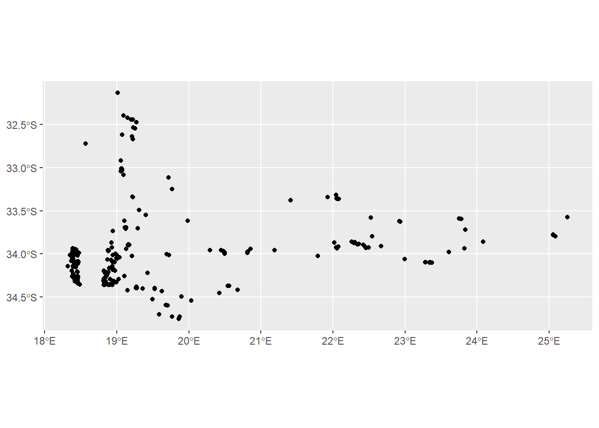
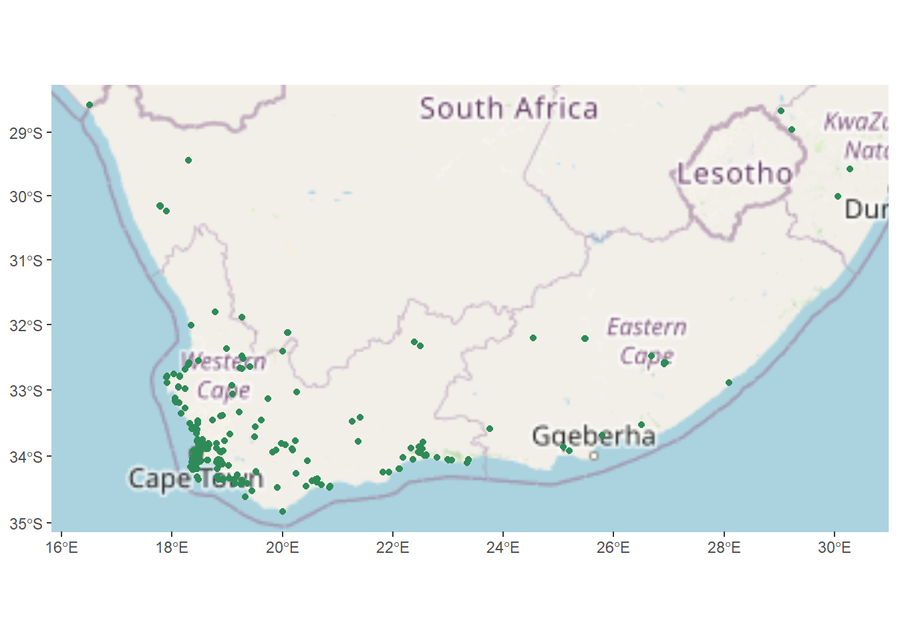
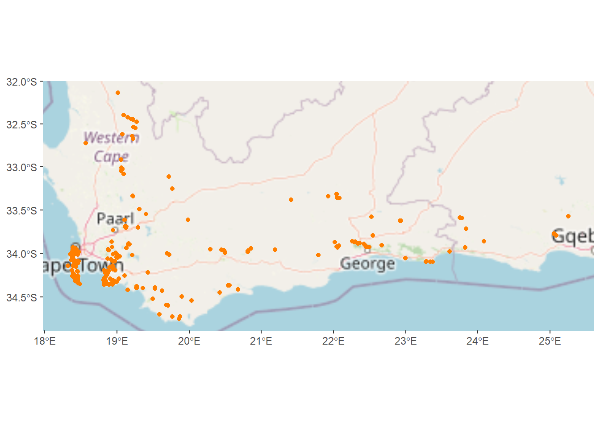
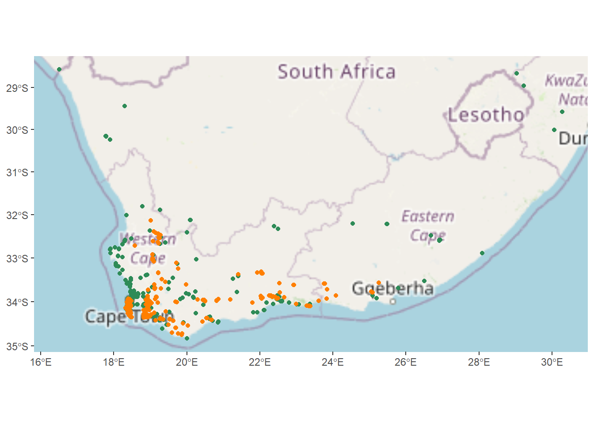
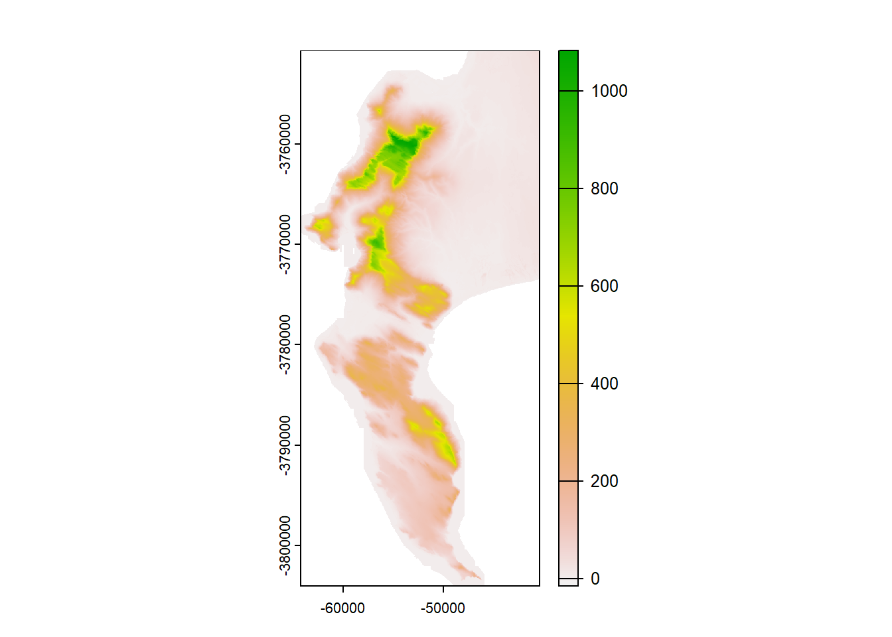

This is a GIS assignment as a requirement for BIO4000W, where I will be plotting observational data on a map. The packages needed for this assignment are: “sf”, “tidyverse”, “rinat”, “rosm”, “ggspatial”, “leaflet”, “prettymapr” and “terra”.
library(sf)
Linking to GEOS 3.11.2, GDAL 3.7.2, PROJ 9.3.0; sf_use_s2() is TRUE
── Conflicts ────────────────────────────────────────── tidyverse_conflicts() ──
✖ dplyr::filter() masks stats::filter()
✖ dplyr::lag() masks stats::lag()
ℹ Use the conflicted package (<http://conflicted.r-lib.org/>) to force all conflicts to become errors
Attaching package: 'prettymapr'
The following objects are masked from 'package:rosm':
makebbox, zoombbox
library(terra)
terra 1.7.71
Attaching package: 'terra'
The following object is masked from 'package:tidyr':
extract
The “rinat” package will be used to extract data directly from iNaturalist into R. In my case, I’m interested in the Lesser Double Collared Sunbird (Cinnyris chalybeus) and the Orange Breasted Sunbird (Anthobaphes violacea). The aim is to see whether the distributions of these two species overlap in the Cape Peninsula.
Here I am reading in observational data for each species, where I will get the latest 1000 observations.
The next step is to filter the data to ensure that I only use “research grade” observations for my analysis. This means that the identifications have been verified by a few people, so they are likely to be correct. I also want to make sure that I exclude any observations that may have been birds in captivity.
# Filtering to make sure I only get the research grade observationscc <- cc %>%filter(positional_accuracy<46& latitude<0&!is.na(latitude) & captive_cultivated =="false"& quality_grade =="research")av <- av %>%filter(positional_accuracy<46& latitude<0&!is.na(latitude) & captive_cultivated =="false"& quality_grade =="research")
I now am going to convert my data frame into a spatial object, while also setting the Coordinate Reference System (CRS).
#Turning the data frame into a spatial objectcc <-st_as_sf(cc, coords =c("longitude", "latitude"), crs =4326)av <-st_as_sf(av, coords =c("longitude", "latitude"), crs =4326)
Now we can plot a basic map using ggplot!
#Plotting the points!ggplot() +geom_sf(data = cc)
ggplot() +geom_sf(data = av)

Hmmm kind of just looks like a bunch of dots in a shape that mostly resembles South Africa. Not super helpful. This is where the “rosm” and “ggspatial” packages are useful. Now I’m going to add a basemap to the points I’ve just plotted to give them some context.
#Plot a basic mapggplot() +annotation_map_tile(type ="osm", progress ="none") +geom_sf(data = cc, color ="#2E8B57")

ggplot() +annotation_map_tile(type ="osm", progress ="none") +geom_sf(data = av, color ="#FF7F00")

That looks a bit nicer! Although we could also plot both datasets on the same map.
# Making a map with both data setsggplot() +annotation_map_tile(type ="osm", progress ="none") +geom_sf(data=cc, color ="#2E8B57") +geom_sf(data=av, color ="#FF7F00")

That’s a bit more informative! But I want to focus in on certain areas.
So I’m going to use “leaflet” to make an interactive map, so that users can navigate around South Africa, or the Cape Peninsula as they please. This map should also be in better resolution than the map plotted in ggplot.
Now we have a super cool map with green dots for Cinnyris chalybeus and orange dots for Anthobaphes violacea. There is also a legend in the bottom right corner which is made using the addLegend function.
But now I want to see if there are any environmental factors contributing to the separation of the two species. In this example I’m going to use elevation. This requires the “terra” package.
# Read in the data that I got from the City of Cape Town.elevation <-rast("cape_peninsula/cape_peninsula/CoCT_10m.tif")elevation
class : SpatRaster
dimensions : 9902, 6518, 1 (nrow, ncol, nlyr)
resolution : 10, 10 (x, y)
extent : -64180, 1000, -3804020, -3705000 (xmin, xmax, ymin, ymax)
coord. ref. : GCS_WGS_1984
source : CoCT_10m.tif
name : 10m_BA
min value : -35
max value : 1590
The elevation data is quite a chunky dataset, a bit bigger than what I need, so I’m going to crop it down to the relevant extent (the Cape Peninsula).
#Crop the elevation so that the size is reduced.elevation <-crop(elevation, ext(c(-66642.18, -40412.18, -4019953.29, -3750723.29)))#Plot the elevation dataplot(elevation)

I’m also going to reduce the resolution from 10m to 30m as I don’t really need fine resolution data for the next step of my analysis.
# aggregate to reduce file sizeele30 <-aggregate(elevation, fact =3, fun = mean)
Unfortunately on iNat, some people have identified the birds down to sub-species level while others haven’t. This means that instead of comparing two species, we will be comparing about 5 sub-species which isn’t what I want. To get around this, we will manually change the names of all of them to either “Cinnyris chalybeus” or “Anthobaphes violacea”.
# manually changing the species namesccBind$scientific_name <-str_replace_all(ccBind$scientific_name,c("Cinnyris chalybeus chalybeus"="Cinnyris chalybeus","Cinnyris chalybeus subalaris"="Cinnyris chalybeus","Cinnyris chalybeus albilateralis"="Cinnyris chalybeus"))
Now we need to extract the data points!
# Using terra to extract the data pointsdata <- terra::extract(ele30, vect(ccBind))
Warning: [extract] transforming vector data to the CRS of the raster
With the data prepared, the next step is to make a boxplot that compares the elevation occupied by each species.
# Making a boxplotccBind$elevation <- data$`10m_BA`ccBind %>%ggplot() +geom_boxplot(aes(scientific_name, elevation), color =c("#FF7F00", "#2E8B57"))